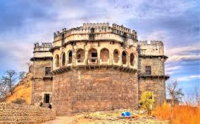

Daulatabad Fort

-
Daulatabad Fort, which is also known as Devagiri was built in the 14th century. Situated at a distance of 16
km northwest of Aurangabad, this fort is considered one of the seven wonders of Maharashtra.
-
Among the most gorgeous forts in Maharashtra, Daulatabad was captured by various rulers, including the
Mughals, the Marathas, and the Peshwas.
-
In 1724 AD, it came under the Nizams of Hyderabad.
-
In order to reach the fort, you have to climb about 750 steps, which makes it a great
hike.
-
Location: MH SH 22, Daulatabad, Maharashtra 431002 Entry Fees: N/A
Famous For: Sightseeing, Trekking, Photography